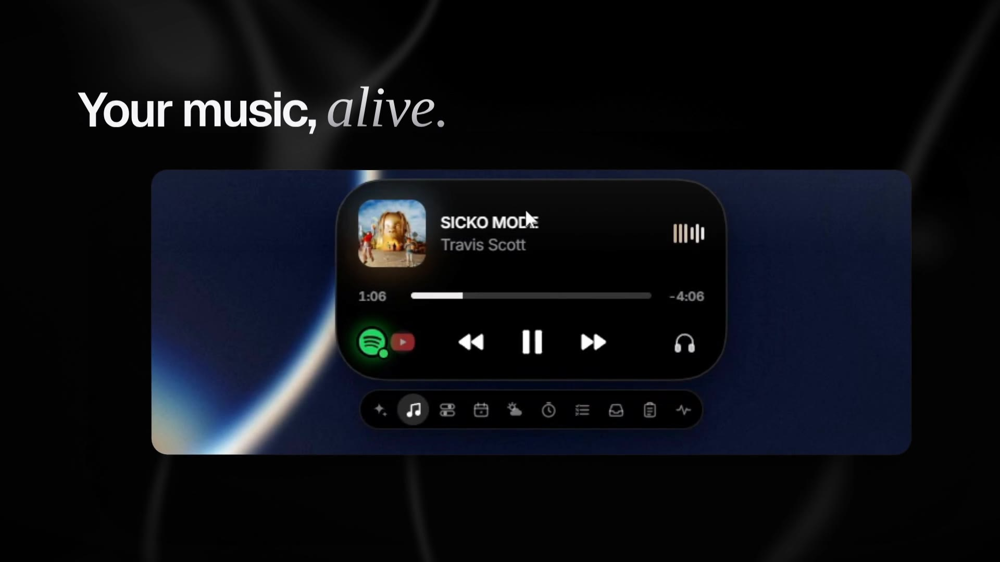

Now Playing
Your music, alive.
Real album art, a waveform that follows the actual audio, a scrubber you can drag and one tap to switch between apps that are playing.
SpotifyYouTubempvVLC (partial)Any media app
The most faithful 1:1 Dynamic Island for Windows 10 and 11. Every spring, morph and cover flip from the iPhone, rebuilt for your desktop.

Every clip on this page is the real app, captured on a real desktop.
Real album art, a waveform that follows the actual audio, a scrubber you can drag and one tap to switch between apps that are playing.
The cover turns on its axis, blurs and lands sharp, exactly like iOS. Tucked away as a pill it turns too, glowing in the colour of each album.
Play something in mpv (or, partly, VLC) and the island shows the real poster, whole and uncropped, with the title and director. Episodes get their season, number and name.
Press Ctrl Alt Space and the island becomes a search bar. Type or speak, and get a short answer with its sources from live web, news and sports results.
iPhone and Android phones running LocalSend show up right in the island. Accept photos with one click, watch them arrive, and send files back from the Shelf. Nothing leaves your Wi‑Fi.
Windows notifications arrive as island banners, with the sender’s profile picture and any image they sent. Swipe one away, or click it to open the app.
Progress, speed and time left for your browser, Internet Download Manager and Mister Download Manager. Hover for the full list, or click a finished file to open its folder.
Falling snow, drifting clouds and rain behind the temperature, an hourly strip and a 7-day forecast, styled after iOS Weather.
A small pill with the cover, a glow in its colour and a live waveform.
AirPods and Beats spin into view with their battery.
Timers, stopwatches and focus sessions stay with you.
Music and a download, a screen recording or a timer? The second one buds off into its own bubble, and melts back in when it’s done.
The Windows pop-ups, replaced. Plus Silent and Caps Lock.
Camera and microphone dots, right where iPhone puts them.
Control Center, calendar, notes and to-dos, a file shelf, clipboard history and system stats. Scroll to move between them, and turn off or reorder any.